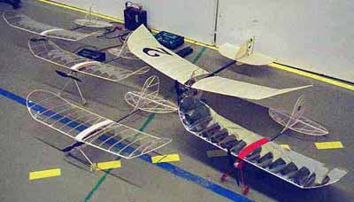
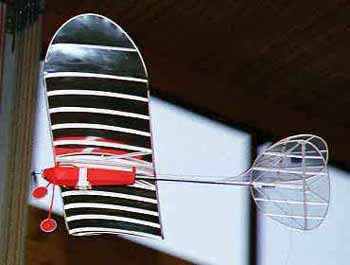
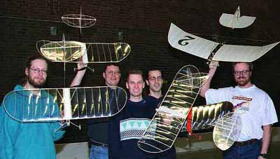
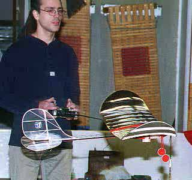

Here are the the new pictures from the indoor meeting held in Stockholm January 11th.

No one's flying. Have to let the "Rubberpeople" do their thing...

Repaired and flying - My Wespe airborne.
Powerpack taped to the fuse to move CG slightly rearwards.
Power from 7 cell 50 mAh pack. (Used in all Wespes)
AUW 100 grammes
WES 3,5 g servos
Simprop NANO reciever (12g)
Flying time is 4-5 mins.
I can climb about 45 degrees

All the boys in one pic!
From left: Gunnar Ulvfot, Ulf Eweman, Jonas Romblad,
Johan Bjurling and Tomas Leijon.

My trying to land on the transmitter antenna! Well, a SLOW fly-by, to be honest...
Fly lo'n'slo! - Johan Bjurling
Johan Bjurling can be reached at johanbju@hem1.passagen.se
back | gallery index | home page
Copyright 1998, Thayer Syme. All rights reserved